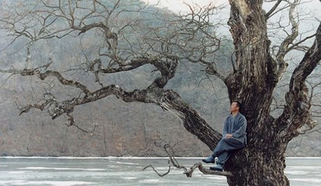

好早以前就一直说要写写这部电影，却又迟迟无法动笔。可能有些电影真的是无法言说的，至少以自己的语词程度还难以表达。之所以又想起这部电影，还是因为一件偶然也可以说是必然的事情。 这个月23号就是我在这家公司的Last Day。离开之前不免要到处转转拍照留恋。公司大楼后头有一处我们午饭后经常绕行的小院子，平时这里来往人少安静，我也经常会到那里透透气。院子正中是一座庙子一样的小楼，正正方方的，楼前是两棵参天大榕树，阳光透过榕树照下来，没人的时候就有了一些安静的禅意。今天又遛到这里，清净的庙宇坐在院子中央，很自然的，就想到了这部《春去春又来》。
金基德的影片美丽而残忍。唯美宁静的外表下总是隐藏着畸形的欲念，《漂流欲室》里的哑女，《弓》里的老人，《坏小子》里的大学生，《撒玛利亚女孩》里的援交少女，《时间》里的整容女孩……这部却把眼光放大到了人生轮回上去，更似一幅写意画，留白处满是禅意。四季分明的群山和湖水，湖中心飘荡的孤寺，修行的僧人，一叶扁舟，隐形的山门。这样一处洗涤一切尘世缭绕的空灵所在，僧人却犯下杀戒、色戒，即使刻下心经，背负巨石攀峰，也逃离不了轮回的宿命。或许逃离宿命的唯一办法就只有像老僧人那样闭五官而自焚才能化作舍利子。 一个关于轮回的命题，金基德运用了完美的视觉和听觉语言来表达，堪称绝品。春夏秋冬，四季更替，即为人生的一个轮回。山色，湖水的随之变化，又对应了人心的变化，二者相互交融，浑然一体。每一帧镜头都是那般精致考究，以至你差点不敢相信这出自以残酷美学著称的金基德之手。以视觉意象反映佛家思想并非易事，但金基德却在最大程度上赋予了凡物以禅意。听觉上，沿用了金导演惜话如金的特点，对白少，大多数时候都是环境音效，不同季节的湖水声，风吹入林声，木鱼声，风铃声，划船声……配合长时间的空镜头，只结尾处，僧人苦修负重爬山的时候才响起苍凉高亢的女声，让人听上去有些不寒而栗。宿命的味道愈发浓烈了。 末尾，山顶的佛像静默地凝视着人间万物的轮回，那许多生灵试图逃离轮回的挣扎都在她安祥的目光里融化了。